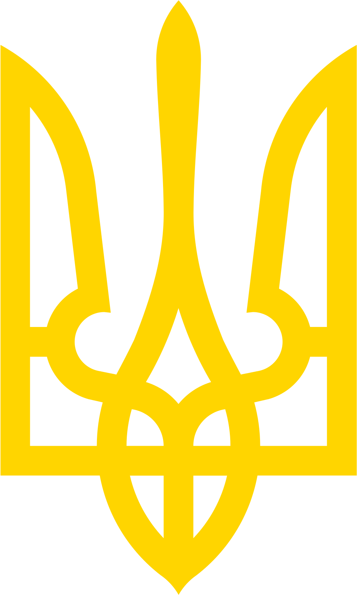

Harvard-MIT Ukraine Trek 2026
Choose where to begin.
Register your interest now, or continue to the information page to learn more about the trek.
Register your interest now, or continue to the information page to learn more about the trek.
An immersive trek for students and alumni who want to engage with Ukraine’s leadership, resilience, innovation, and recovery firsthand. The 2026 preparation has begun, so register if you are interested to stay in the loop.
Ukraine remains the most relevant country in the world today for anyone interested in geopolitics, democratic resilience, defense innovation, public leadership, recovery, and national identity.
Gain firsthand insight into policy challenges, economic recovery, security strategy, and leadership under pressure.
Engage with one of the defining conflicts shaping the global order and democratic resilience.
Witness advances in defense tech, digital infrastructure, and public-private collaboration.
Last year’s trek combined high-level meetings, site visits, cultural context, and on-the-ground learning. It gave participants a chance to engage directly with the people and institutions shaping Ukraine’s present and future.
Previous participants encountered policymakers, universities, NGOs, innovators, cultural institutions, recovery initiatives, and communities living with the realities of war and resilience every day.
The capital portion emphasized political leadership, wartime governance, innovation ecosystems, humanitarian response, and places where Ukraine’s recent history can be felt directly.
The western part of the trek broadened into culture, universities, rehabilitation, civic resilience, local leadership, and the longer arc of recovery and reconstruction.


Safety is central to how the trek is designed. Last year’s trek happened during one of the largest air raids, but we made sure everyone is safe and protected. This is assured through disciplined protocols, close coordination with local partners, and a realistic understanding of wartime routines.
We coordinate closely with partners and local experts on the ground.
Hotels, venues, and transportation are planned with alerts, shelters, and emergency procedures in mind.
Plans may change depending on the situation on the ground, and adaptability is part of the trek.
Practical briefings, clear protocols, and attention to participant wellbeing are part of the preparation.
The best way to hear and learn about Ukraine is from the people who are there: leaders, builders, organizers, innovators, and communities carrying the country forward.
Coverage of the trek's visit and exchange with Harvard Kennedy School and MIT students and alumni.
An external look at the delegation's engagement with Ukrainian institutions, ideas, and civic life.
Opinion coverage connecting the trek to the broader stakes of Ukraine, Russia, and the international response.
A vivid account from the trip that captures the urgency, atmosphere, and lived reality surrounding the Ukraine Trek experience.
If you want to be part of the most exciting and important trek of the year and hear first when applications open, reach out now. We would love to keep you in the loop as Ukraine Trek 2026 takes shape.

Honor to the people, culture, courage, and future that this trek invites participants to encounter firsthand.